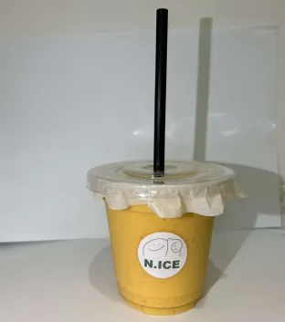

nice_sweets
🧊 レシピ（アイス） ― 各種 ¥800
{kind=link}
-
👉 おれおアイスの作り方
- カップにアイスを巻く
- チョコソースをかける（適量）
- 粉々オレオを盛り付け
- 画像より小さくなっているが、オレオを良い感じに３枚載せる
- クッキーを写真の様に盛り付け、スプーンを挿して完成
※シールを必ず貼る事

-
👉 チョコバナナアイスの作り方
- カップにアイスを巻く
- チョコソースをかける（適量）
- バナナ（３きれ）、チョコケーキ（５きれ）を盛り付ける
- クッキーを写真の様に盛り付け、スプーンを挿して完成
※シールを必ず貼る事

-
👉 キャラメルアイスの作り方
- カップにアイスを巻く
- キャラメルソースをかける（適量）
- チーズケーキ（５きれ）を盛り付ける
- クッキーを写真の様に盛り付け、スプーンを挿して完成
※シールを必ず貼る事

-
👉 抹茶アイスの作り方
- カップにアイスを巻く
- 抹茶粉をかける（適量）
- あんこ（適量）を盛り付ける
- クッキーを写真の様に盛り付け、スプーンを挿して完成
※シールを必ず貼る事

🧇 レシピ（クロッフル） ― 各種 ¥800
-
👉 クロッフルの焼き方
- 解凍済みクロワッサン生地に砂糖をふんだんに振りかける
※１～２パックは冷凍庫から冷蔵庫へ解凍しておくこと
- プレートに置く前に生地を伸ばしておく
プレートに置いたらタイマー５分くらいに合わす
※焼く前に余熱（３分くらい）温めておく
- 焼き終えたら棒を挿して置いておく
- 注文が入ったら電子レンジでちょっとだけ温めて完成（また何秒温めるか教えてください）

- 解凍済みクロワッサン生地に砂糖をふんだんに振りかける
-
👉いちごクロッフルの作り方
- 生クリームをふんだんに（クロッフルが見えないくらい）にかける
- いちご（４きれ）・チーズケーキ（８きれ）を盛り付け
- いちごソース（適量）をかけて完成

-
👉オレオクロッフルの作り方
- 生クリームをふんだんに（クロッフルが見えないくらい）にかける
- オレオ（４枚）＋粉々オレオ（適量）を盛付ける
- チョコソース（適量）をかけて完成

-
👉 チョコバナナクロッフルの作り方
- 生クリームをふんだんに（クロッフルが見えないくらい）にかける
- バナナ（４きれ）・チョコケーキ（８きれ）を盛付ける
- チョコソース（適量）をかけて完成

🍩 レシピ（チュロス）
・チュロス単品 （￥８００）
・チュロス&アイス （￥１０００）
-
👉 チュロスの焼き方
- 冷凍のままチュロスを取出し温度２５０度、時間４分で焼く
※チョコとミルクを４本ずつ一気に
- 焼きあがったら半分に切る
※焼く前に余熱（３分くらい）温めておく
- 焼き終えたらどこかに置いておく
- 注文が入ったら電子レンジでちょっとだけ温めて完成（また何秒温めるか教えてください）
.png)
- 冷凍のままチュロスを取出し温度２５０度、時間４分で焼く
-
👉 チュロス単品の作り方
- 注文が入ったら窓付き容器にペーパーシートを敷いてチュロスを置く
※各種3本ずつ
- 窓付き容器を閉めたら完成
※シールを必ず貼る事
.png)
- 注文が入ったら窓付き容器にペーパーシートを敷いてチュロスを置く
-
👉 チュロス＆アイスの作り方
- アサイーカップの端っこに見本写真のようにアイスを巻く
- 生クリームアイスの横に巻いてチョコソースをかける
- 空いている隙間にチュロス２本ずつトッピングで完成
※シールを必ず貼る事

🍞 レシピ（フレンチトースト）
・フレンチトースト単品（￥８００）
・フレンチ&アイス
（￥１０００）
-
👉 フレンチトーストの焼き方
- フレンチトーストを冷凍のまま取出し６５０Wの２分で焼く
※フレンチトーストは作り置き✕
- 焼きあがったらフレンチトーストを合計９きれになるように切る
- 切ったらもう一度温める６５０Wの１分３０秒
.png)
- フレンチトーストを冷凍のまま取出し６５０Wの２分で焼く
-
👉 フレンチトースト単品の作り方
- 注文が入り焼き終わったら写真の様に入れる
- フォークを渡すの忘れずに！

-
👉 フレンチ&アイス単品の作り方
- 注文が入り焼き終わったら写真の様に入れる
- アイスをその上に巻く
※フレンチトーストは熱いのでアイスがすぐ溶ける為すぐの提供をお願いします

🥤 レシピ（ジュース） ― 各種 ¥750
大きいミキサーで！
-
👉 いちごジュースの作り方
- ミキサーに下記の材料を入れて攪拌する
- 解凍したカットイチゴ１００ｇ
- 牛乳１５０ｇ
- はちみつ２０ｇ
- カップに氷を２，３個入れて攪拌したジュースに入れる
※シールを必ず貼る事

- ミキサーに下記の材料を入れて攪拌する
-
👉 マンゴージュースの作り方
- ミキサーに下記の材料を入れて攪拌する
- 解凍したマンゴー１００ｇ
- 牛乳１５０ｇ
- はちみつ２０ｇ
- カップに氷を２，３個入れて攪拌したジュースに入れる
※シールを必ず貼る事

- ミキサーに下記の材料を入れて攪拌する
{kind=link}
-
👉 バナナジュースの作り方
- ミキサーに下記の材料を入れて攪拌する
- バナナ１００ｇ
- 牛乳１５０ｇ
- はちみつ２０ｇ
- カップに氷を２，３個入れて攪拌したジュースに入れる
※シールを必ず貼る事

- ミキサーに下記の材料を入れて攪拌する
-
👉 アサイージュースの作り方
- ミキサーに下記の材料を入れて攪拌する
- アサイーの原料１００ｇ
- 牛乳１５０ｇ
- はちみつ２０ｇ
- カップに氷を２，３個入れて攪拌したジュースに入れる
※シールを必ず貼る事

- ミキサーに下記の材料を入れて攪拌する
🥣 レシピ（アサイーボウル） ― ¥1300
-
👉 アサイーボウルの作り方
- 作り置きしてあるアサイーをカップに２００ｇ入れて平らにする
※人によって量違うとのクレームが来るので注意
- 平らにした所にグラノーラを１ｃｍくらい敷いてバナナ（約１０きれ）載せる
- お客さんから聞いたトッピングを店員さん自分好みでいいので盛り付ける
※使う量は合わせてください
- 蓋を閉めて蓋の上にシールを貼って完成
いちご２個（８きれ）・カットイチゴ（スプーン２杯）
キウイ（スプーン２杯）・マンゴー（２掴み）
ブルーベリー（スプーン２杯）・ケーキ類（５個）
オレオ（５枚）・粉々オレオ（スプーン２杯）
※カットイチゴとブルーベリーは冷凍で！

- 作り置きしてあるアサイーをカップに２００ｇ入れて平らにする